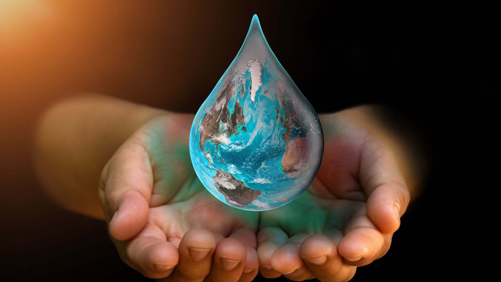

¿Por qué es importante cuidar el agua?
El agua es esencial para la vida. Sin ella, los seres humanos, los animales y las plantas no podrían sobrevivir. Cuidarla significa proteger nuestra salud, nuestra seguridad alimentaria y nuestros ecosistemas.
Su uso responsable nos permite tener acceso al agua potable, regar cultivos, generar energía y mantener limpios nuestros espacios. Además, es vital para el saneamiento e higiene.
Si no la cuidamos, enfrentaremos escasez, enfermedades, pérdida de biodiversidad y conflictos por el acceso. La contaminación y el desperdicio agravan estos problemas, poniendo en riesgo el bienestar de millones de personas.